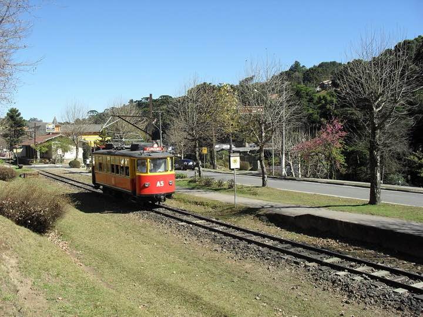
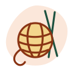
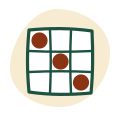
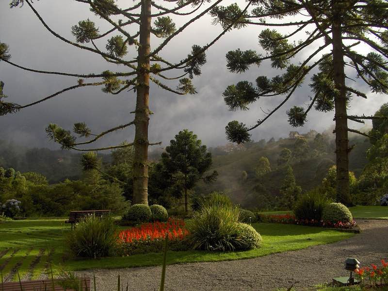
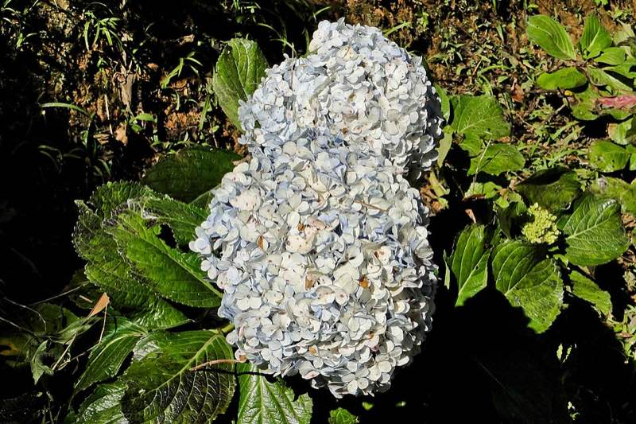
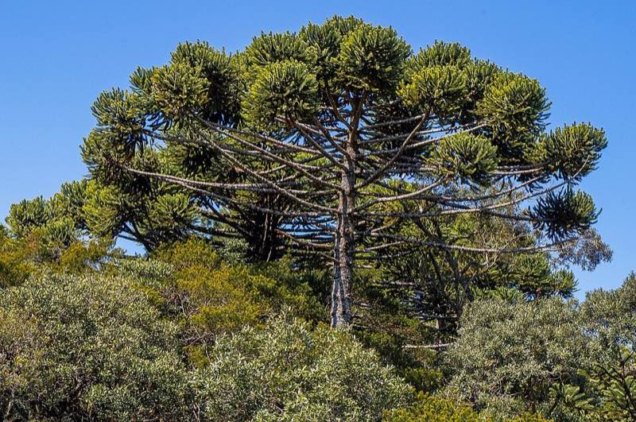
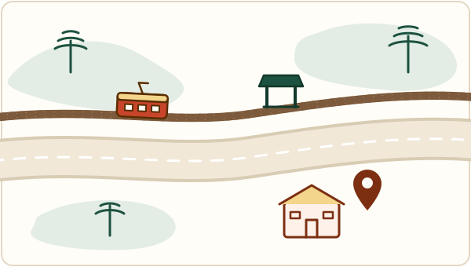

Centro de Convivência do Idoso “Wilma Jundi Dubieux”
Um lugar para fazer amigos, aprender e se divertir.
Atividades gratuitas para quem tem 60 anos ou mais, de segunda a sexta, aqui em Campos do Jordão.
- Quando
- Segunda a sexta, das 8h15 às 16h confirmar horário de abertura
- Onde
- Av. Frei Orestes Girardi, 105, Abernéssia. Perto da Parada Fracalanza do bondinho.
- Telefone
- (12) 3662-4766
O que se faz por aqui
Toque em um grupo para ver os dias e horários de cada atividade.
-
Corpo em movimento Ginástica, ginástica funcional, aerofight, alongamento, dança e tênis de mesa. Ver dias e horáriosEsconder horários
Veja na programação mais abaixo.
-

Mãos e criatividade Artesanato e aulas de caligrafia. Ver dias e horáriosEsconder horáriosVeja na programação mais abaixo.
-
Voz e palco Grupo de canto, oficina de teatro e café com poesia. Ver dias e horáriosEsconder horários
Veja na programação mais abaixo.
-
Cuidado Massagem e atendimento com psicóloga. Ver dias e horáriosEsconder horários
Veja na programação mais abaixo.
-

Encontros e passeios Bingo, jogos de tabuleiro e passeio ao Museu Felícia Leirner. Ver dias e horáriosEsconder horáriosVeja na programação mais abaixo.
Como participar
- Ter 60 anos ou mais. Não paga nada: todas as atividades são gratuitas.
- Ir até o CCI e fazer a inscrição pessoalmente.
- Levar os documentos da lista a seguir.
Leve com você
- RG
- CPF
- Endereço
- Telefone para contato
- Número do NIS, PIS ou PASEP
- Laudo médico de ortopedista, clínico geral e cardiologista a confirmar se são os três
Programação
Hoje
Carregando a programação…
Nos próximos dias
Se a programação não aparecer, ligue para o CCI ou vá até lá: a programação também fica no mural da unidade.
Grade de atividades de outubro de 2026. confirmar se vale para novembro
Passeios e eventos
Se os passeios não aparecerem, pergunte no CCI.
O espaço e a cidade
Em breve, fotos do próprio CCI: o salão, as oficinas e os trabalhos feitos aqui. Enquanto isso, um pouco da Campos do Jordão que a gente vê no caminho.



Notícias e fotos
Para a família
Conhece alguém que gostaria de participar? Mande as informações do CCI pelo WhatsApp ou imprima a programação para deixar na geladeira.
Como chegar

- CCI, Av. Frei Orestes Girardi, 105
- Parada Fracalanza do bondinho
- Trilho do bondinho
Desenho fora de escala, só para dar uma ideia. conferir as posições no local
- Endereço
- Av. Frei Orestes Girardi, 105
Bairro Abernéssia, Campos do Jordão (SP) - Ponto de referência
- Perto da Parada Fracalanza do bondinho
- Horário
- Segunda a sexta, das 8h15 às 16h confirmar horário de abertura
- Telefone
- (12) 3662-4766